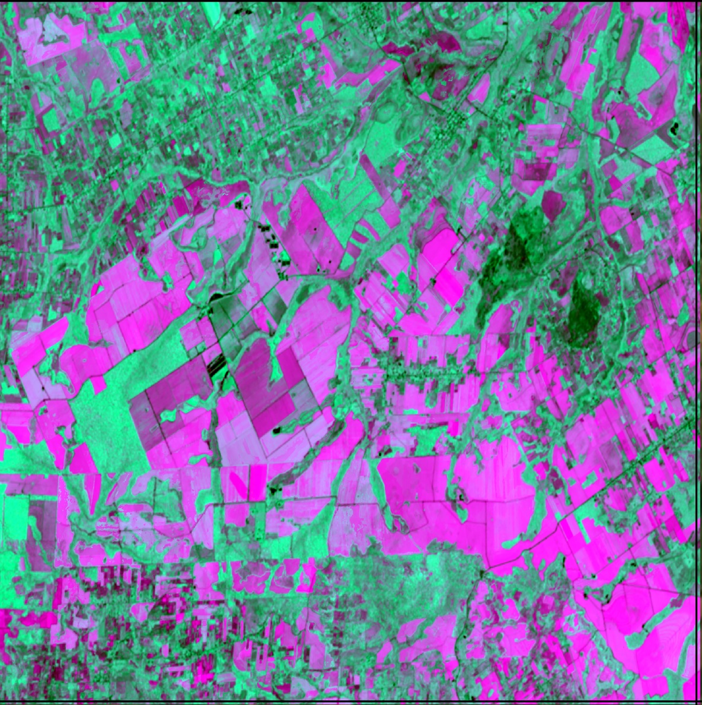

Pipeline process¶
======================================================================
The pipeline process is driven by the pytuyau script see here for more information on the script process.
We are currently using only two processes in our image prep: coregistration (STEP=”preprocess”) and time series (STEP=”reconstruct”) First run the coregistration script (eostac_pipe_py.sh) Then run the time-series script (eostac_pipe_ts_py.sh) for each index you need processed
Note
The CEL drive space on the cluster is setup such that all products through co-registration saved on the sandbox space (raid-cel/sandbox/sandbox-cel or just /home/sandbox-cel). These files are not backed up for more than 10 days (if you lose important files, you can probably get them recovered within 10 days, but not after). Time series outputs and beyond are saved to the downspout space (raid-cel/r/downspout-cel or just /home/downspout-cel), which has a separate long term backup.
To run the coregistration step:
cd code/bash
vim eostac_pipe_py.sh
1- #!/bin/bash -l
2- #SBATCH -N 1 # number of nodes
3- #SBATCH -n 2 # number of cores
4- #SBATCH -t 0-08:00 # time (D-HH:MM)
5- #SBATCH -p basic
6- #SBATCH -o stacpipe_crg.%N.%a.%j.out # STDOUT
7- #SBATCH -e stacpipe_crg.%N.%a.%j.err # STDERR
8- #SBATCH --job-name="stpipe_crg"
9- #SBATCH --array=86
10- GRIDS="$(($SLURM_ARRAY_TASK_ID + 4000))"
#############################################
# Turn off NumPy parallelism and rely on dask
#############################################
11- export OPENBLAS_NUM_THREADS=1
12- export MKL_NUM_THREADS=1
13- # This should be sufficient for OpenBlas and MKL
14- export OMP_NUM_THREADS=1
################################################
15- STEP="preprocess"
16- SAT_SENSORS=S2,S2cp,LT05,LE07,LC08,LC09
18- NCHUNKS=512
###############################
# DO NOT MODIFY BELOW THIS LINE
###############################
# activate the virtual environment
19- conda activate venv.lucinsa38_pipe
20- CONFIG_UPDATES="grids:[${GRIDS}] res:${REF_RES} crs:${REF_CRS}
21- cloud_mask:sat_sensors:${SAT_SENSORS}
22- main_path:/raid-cel/sandbox/sandbox-cel/paraguay_lc/stac/grid
23- backup_path:/raid-cel/r/downspout-cel/paraguay_lc/stac/grids
24- num_workers:${SLURM_CPUS_ON_NODE}
25- io:n_chunks:${NCHUNKS} cloud_mask:reset_db:${RESET_CLOUD_DB}
26- cloud_mask:ref_res:${REF_RES}"
27- tuyau $STEP --config-updates $CONFIG_UPDATES
28- conda source deactivate
Most lines should stay as they are.
the lines that you need to change are:\
Grid info:
#SBATCH --array=(line 9 here). This is where you enter the gridcells you are processing.
You can enter a range (e.g. 898-908), But be mindful that you are not hogging all the computer bandwidth.
You can limit the number of cells that are processed at one time by adding %n
For example, 898-908%4 would process 4 cells at a time. When the first 4 finish, the next will start.
To run the time series step:
cd code/bash
vim eostac_pipe_ts_py.sh
1- #!/bin/bash -l
2- #SBATCH -N 1 # number of nodes
3- #SBATCH -n 8 # number of cores
4- #SBATCH -t 0-08:00 # time (D-HH:MM)
5- #SBATCH -p basic
6- #SBATCH -o stacpipe_ts.%N.%a.%j.out # STDOUT
7- #SBATCH -e stacpipe_ts.%N.%a.%j.err # STDERR
8- #SBATCH --job-name="stpipe_ts"
9- #SBATCH --array=957,958
10- GRIDS="$(($SLURM_ARRAY_TASK_ID + 3000))"
11- #VIs=("evi2")
12- VIs=("gcvi" "wi")
13- #VIs=("evi2" "gcvi" "wi")
14- #VIs=("kndvi" "nbr" "ndmi")
15- #VIs=("evi2" "gcvi" " wi" " kndvi" "nbr" "ndmi")
#############################################
# Turn off NumPy parallelism and rely on dask
#############################################
16- export OPENBLAS_NUM_THREADS=1
17- export MKL_NUM_THREADS=1
18- # This should be sufficient for OpenBlas and MKL
19- export OMP_NUM_THREADS=1
################################################
21- METHOD='STAC'
22- STEP="reconstruct"
23- SAT_SENSORS=S2,S2cp,LT05,LE07,LC08,LC09
24- NCHUNKS=512
#############
# RECONSTRUCT
#############
25- RINPUT="ms"
26- START_PAD="2000-01-01"
27- START="2010-04-01"
28- END_PAD="2022-12-01"
29- END="2022-09-01"
30- SKIP_INTERVAL=1
31- SKIP_YEARS=10
32- ROVERWRITE="False"
33- SM_CHUNKS=512
34- PREFILL_GAPS="False"
35- DTS_MAX_WIN=61
36- DTS_MIN_WIN=15
37- PREFILL_YEARS=2
38- DTS_t=5
###############################
# DO NOT MODIFY BELOW THIS LINE
###############################
# activate the virtual environment
39- conda activate venv.lucinsa38_pipe
# Do for each index:
40- for VI in "${VIs[@]}"
41- do
42- CONFIG_UPDATES="grids:[${GRIDS}] res:${REF_RES} crs:${REF_CRS}
cloud_mask:sat_sensors:${SAT_SENSORS}
main_path:/raid-cel/sandbox/sandbox-cel/paraguay_lc/stac/grid
backup_path:/raid-cel/r/downspout-cel/paraguay_lc/stac/grids
dlMehod:${METHOD}
num_workers:${SLURM_CPUS_ON_NODE}
io:n_chunks:${NCHUNKS} cloud_mask:reset_db:${RESET_CLOUD_DB}
reconstruct:input:${RINPUT} reconstruct:start_pad:${START_PAD}
reconstruct:end_pad:${END_PAD} reconstruct:start:${START} reconstruct:end:${END}
reconstruct:skip_interval:${SKIP_INTERVAL} reconstruct:skip_years:${SKIP_YEARS}
reconstruct:vi:${VI} reconstruct:overwrite:${ROVERWRITE} reconstruct:chunks:${SM_CHUNKS}
reconstruct:smooth_kwargs:max_window:${DTS_MAX_WIN}
reconstruct:smooth_kwargs:min_window:${DTS_MIN_WIN}
reconstruct:smooth_kwargs:prefill_max_years:${PREFILL_YEARS}
reconstruct:smooth_kwargs:prefill_gaps:${PREFILL_GAPS} reconstruct:smooth_kwargs:t:${DTS_t}
clean:remove_items:${REMOVE_ITEMS}"
43- tuyau $STEP --config-updates $CONFIG_UPDATES
44- done
14- conda deactivate
index options (lines 11-15):¶
To run a preliminary check, start with evi2
For segmention inputs, we are using evi2, gcvi and wi
For final classification, we are using evi2, gcvi, wi, kndvi, nbr & ndmi
other options for vegetation indices:¶
Current options for vegetation indices are:
avi = ?? (removed?)
evi2 = 2.5 * ( NIR - RED) / ( NIR + 2.4 * RED + 1.0 )
Enhanced Vegetation Index, good for areas of high LAI (leaf-area index), where NDVI tends to saturate
gcvi= scaled index using Green & NIR
Green Chlorophyll Vegetation Index, useful for crop classification
kndvi= tanh(( NIR - RED) / ( NIR + 2.4 * RED + 1.0 ))^2)
nbr = (NIR - SWIR2) / (NIR + SWIR2) + 1e-9)
Normalized Burn Index
wi = 0 if (red + SWIR1) > 0.5, else 1.0 - ((red + SWIR1) / 0.5))
Note
To add a new vegetation index to the code, edits need to be made to both the vis.py and check_reconstruction.py scripts in ~/tmp/pytuyau/pytuyau/steps.
ie, to add NDVI:
in check_reconstruction.py around line 169, add:
elif params['reconstruct']['vi'] == 'ndvi':
band_names = ['nir', 'red']
in vis.py around line 6, add name or your index to the list:
AVAIL_VIS = ['avi', 'evi2', 'gcvi', 'kndvi', 'nbr', 'wi','ndvi']
in vis.py around line 27 add:
elif params['reconstruct']['vi'] == 'ndvi':
vi_data = data_src.gw.ndvi(nodata=0, scale_factor=1)
in vis.py under other index methods (around line 75) add:
def ndvi(self, data):
return self._norm(data[1], data[0])
(note that _norm is defined above that as (b2 - b1) / ((b2 + b1) + 1e-9) there are currently another option of
_scale_min_max: ((((max_out - min_out) * (xv - min_in)) / (max_in - min_in)) + min_out)\ .clip(min_out, max_out), or can
create a different equation without self argument (use @staticmethod on line above index definition)
After modifying script, reinstall:
cd ~
source .nasaenv/bin/activate
cd tmp/pytuyau
python setup.py build && pip install .
Run the process¶
#if not already in bash directory, navigate there:
cd ~/code/bash/
#submit the command:
sbatch pipeline_eri.sh
Current run-time estimates for single grid cells: * Preprocess : 1-2hrs @2cores * Reconstruct: 1-2hrs @8cores per index * Segment * Classify * Assess * Clean
Check result¶
You can make a composite image with MakeTSComposite.sh
TODO: add instructions regarding LUCinSA_helpers

Get grid pipeline status¶
XXX —Currently not using ———————————————-
To generate the Pipeline Progress figure:
#Activate virtual environment:
source .nasaenv/bin/activate
#Run status command:
tuyau status --config-updates status:project_path:/raid-cel/sandbox/sandbox-cel/paraguay_lc/raster/grids status:out_path:<PNG location> status:grid_file:/raid-cel/sandbox/sandbox-cel/paraguay_lc/vector/pry_grids.gpkg status:zoom:True
#Deactivate virtual environment:
deactivate
To view the Processing Progress figure: Download file to view on local computer:
rsync -raz --progress <username>@ssh.eri.ucsb.edu:<ERI path> <local path>
Alternatively, you can view the file though an FPT such as WinSCP.